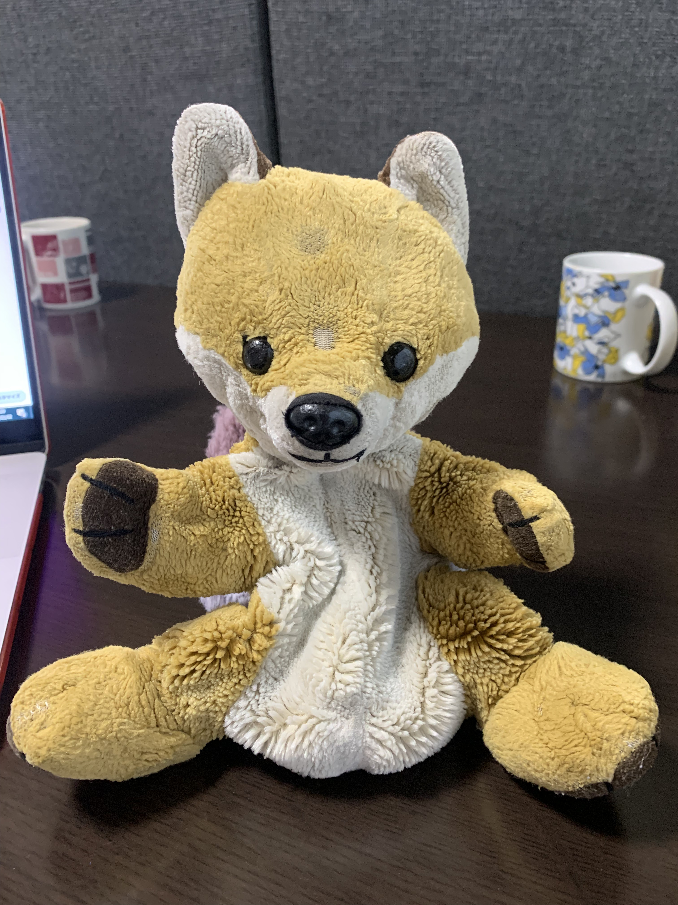
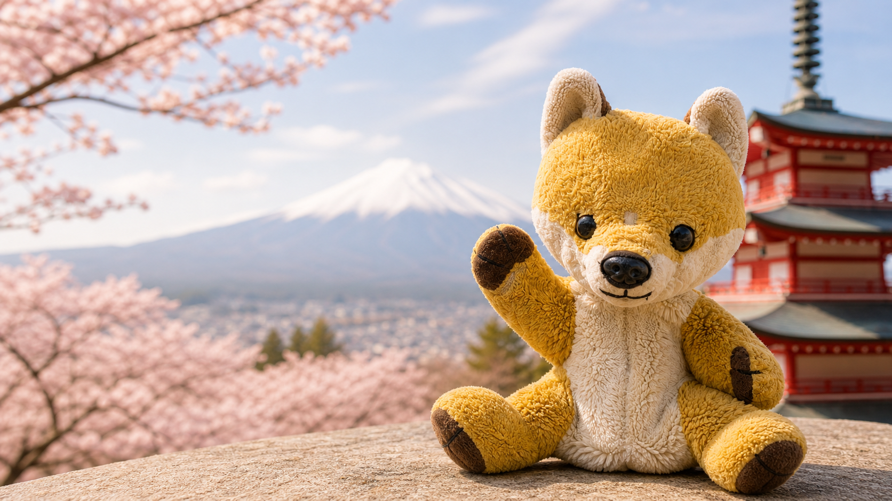
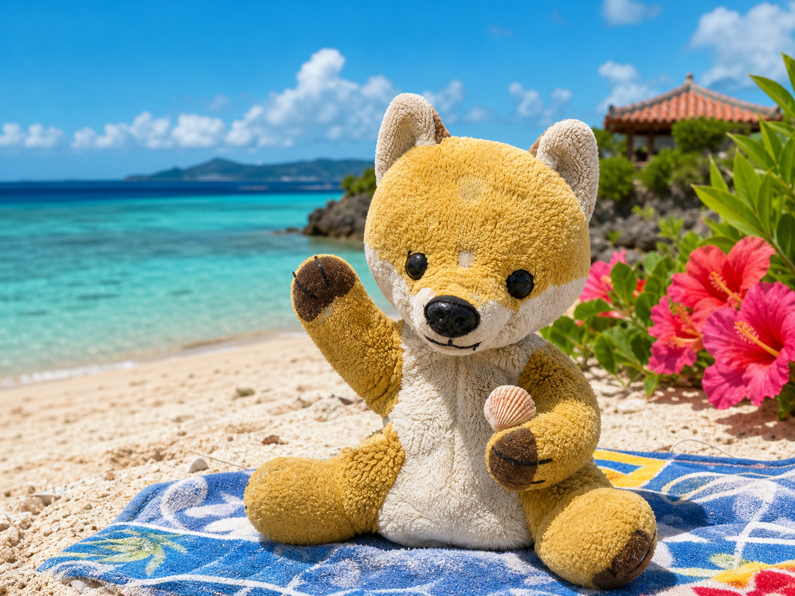
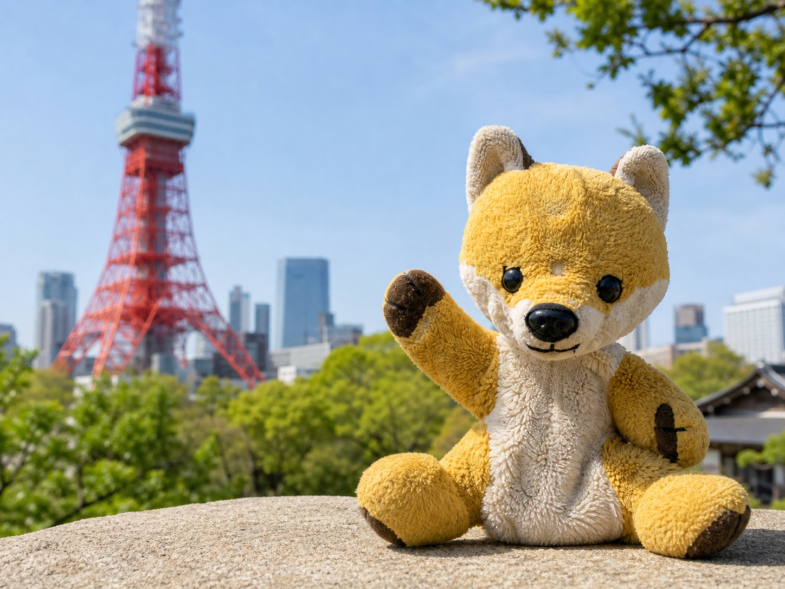
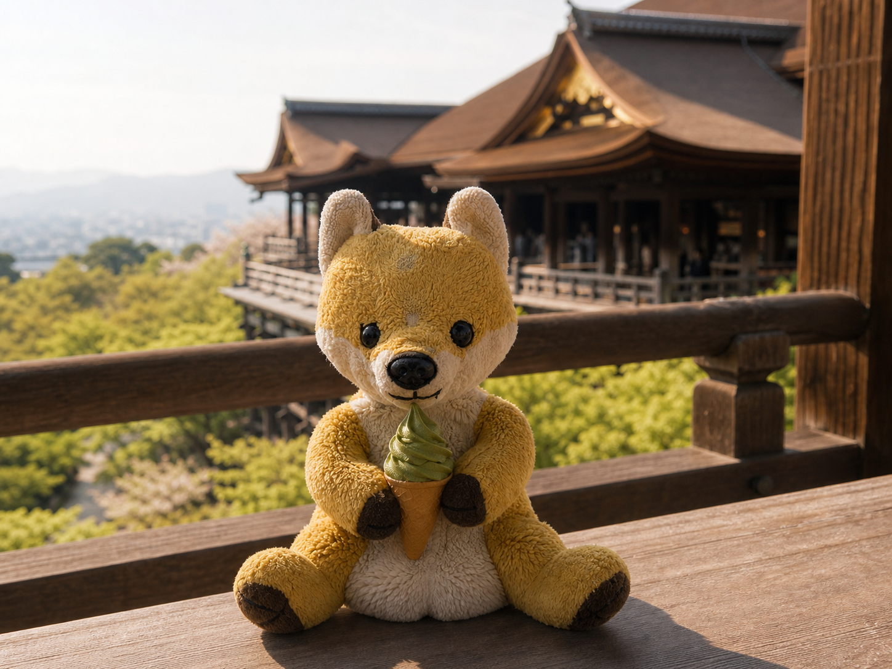
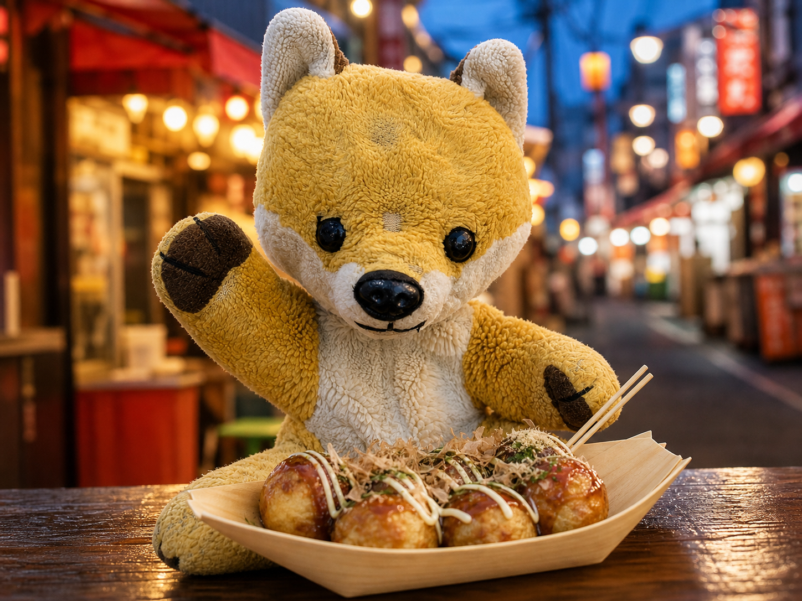
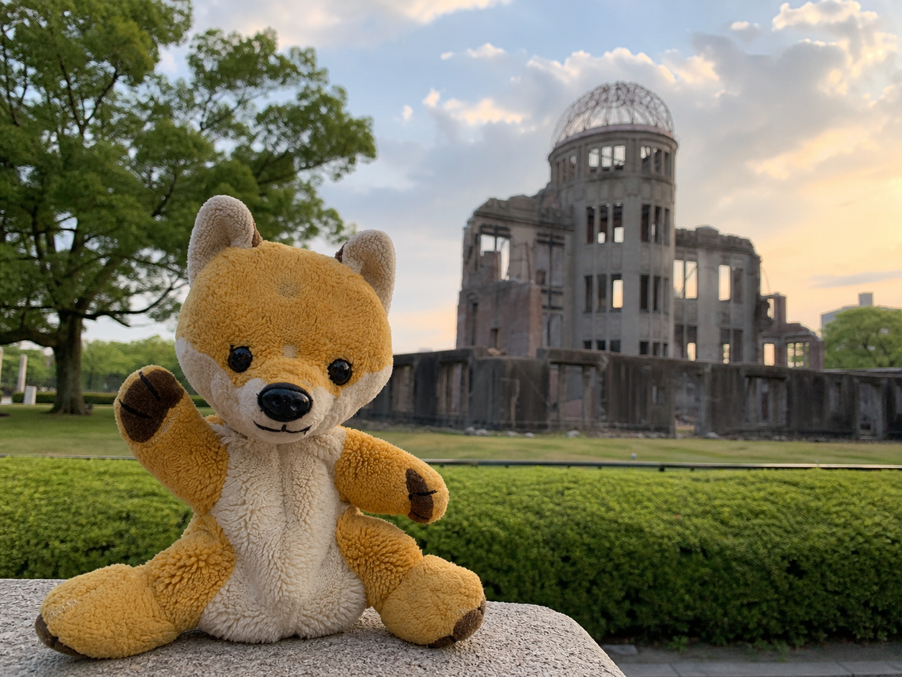

きょっきょの日本めぐり日記

きょっきょと一緒に、いろんな景色に出会おう
ぬいぐるみのきょっきょと
日本を旅する日記サイト
小さなぬいぐるみのきょっきょが、日本全国をめぐりながら見たこと・食べたもの・出会った人を日記にしています。
最新の日記を読むきょっきょの旅マップ
次はどこに行こうかな?
これまで訪れた場所を、足あとと小さなメモでまとめました。
ピンを選ぶと、その土地のひとことメモが変わります。
最新の日記
きょっきょの旅ノート
雪の小樽で運河さんぽ
しんしん雪の朝。石造りの倉庫が水面に映って、きょっきょの足あとも少しだけ白くなりました。

東京タワーと下町めぐり
赤い塔を見上げてから、公園のベンチでひと休み。都会の風もなかなかいいね。

清水寺からの絶景
舞台からの景色に感動。おみくじは「大吉」だったよ、やったー!

たこ焼きにソース二度づけ?
湯気に誘われて寄り道。あつあつをふうふうして、旅のページが香ばしくなりました。

平和記念公園を訪れて
いつもよりゆっくり歩いた一日。静かな芝生と夕方の光を、日記に大切にしまいました。
エメラルドブルーの海!
砂浜で貝がらを拾って、シーサーにも会えたよ。海風がぬいぐるみにもやさしい。
きょっきょの旅フォトギャラリー
ポラロイドの思い出
はじめまして!
旅がだいすきな、きょっきょです。
旅がだいすきな、きょっきょです。
きょっきょのプロフィール
- 名前
- きょっきょ
- 誕生日
- 9月9日
- 性格
- 好奇心旺盛・ちょっぴりマイペース
- 好きなもの
- たこ焼き、温泉、古い駅、写真を撮ること
- 目標
- 日本全国を旅して、たくさんの思い出をつくること